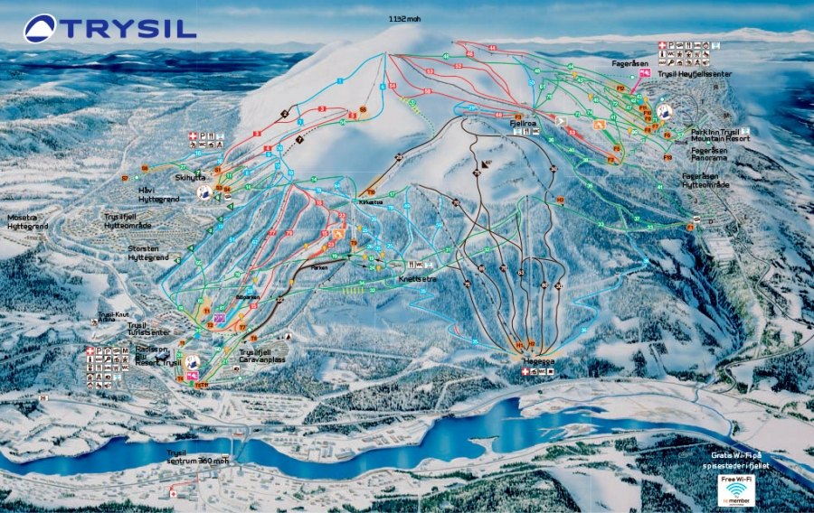

Trysil består av fire sammenhengende skiområder. På begge sider av fjellet ligger det luksuriøse, moderne hotell med både leiligheter og hotellrom samt bading, spa og flere restauranter.

Trysilfjellet
I flere år på rad har Trysil blitt kåret til Norges beste skidestinasjon på World Ski Awards.
Langrenn
Langrennsløypene i Trysilfjellet kan settes sammen til korte og lange rundturer. Mulighetene er mange. Skihytta og Fageråsen er flotte utgangspunkt for en vellykket skitur
Hundeslede
Hundesledekjøring er spenning, eventyr og opplevelse! I Trysil kan du styre din egen slede gjennom ekte høyfjellsterreng. 40 minutter, halv dag eller hel dag.